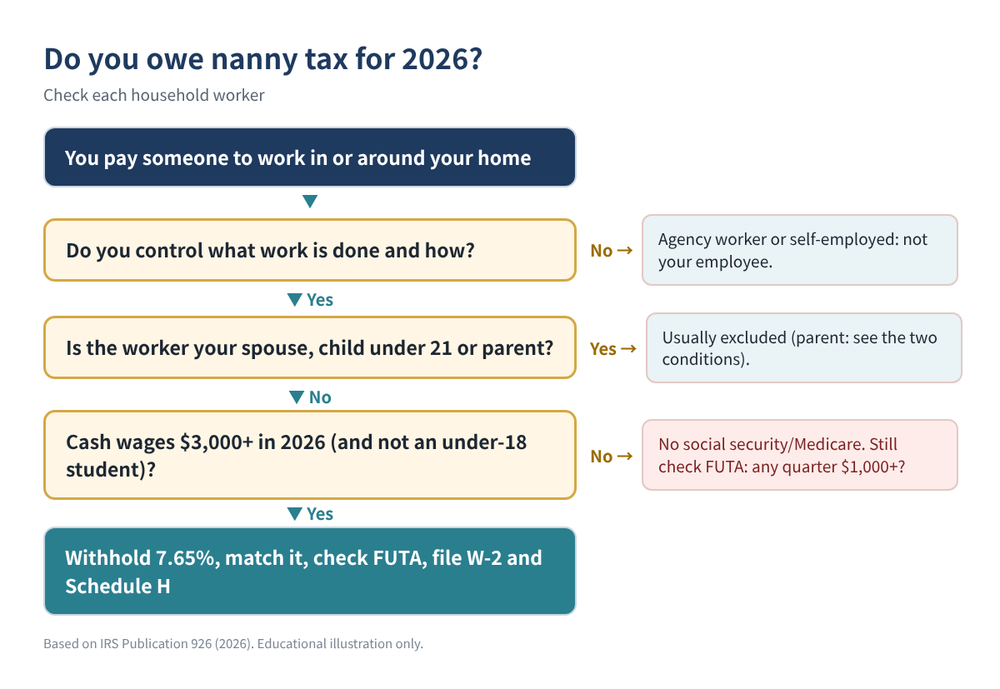
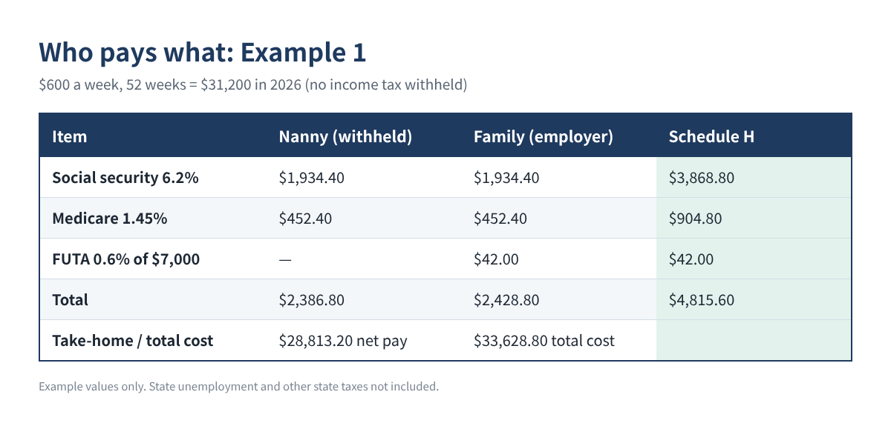
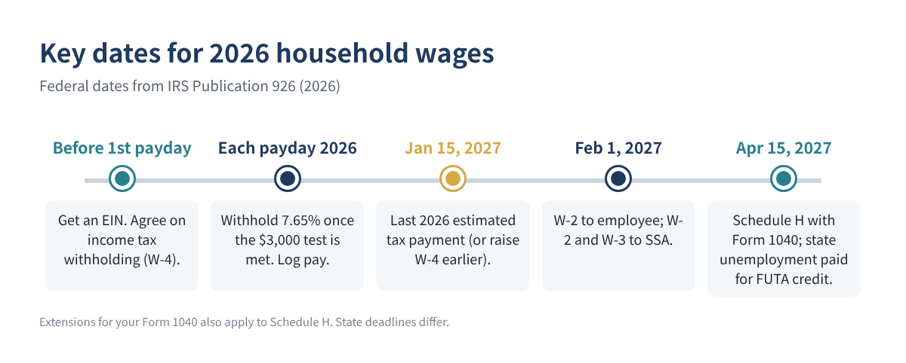

If you pay a nanny, babysitter, caregiver for a parent, housekeeper or private gardener, you may be a household employer in the eyes of the IRS. That brings a short list of yearly duties: withholding social security and Medicare, paying federal unemployment tax, giving your worker a Form W-2 and filing Schedule H with your own return. Many families only find out in April, when the paperwork is late and the tax is due all at once.
This guide walks you through the 2026 thresholds, the exceptions, a step-by-step calculation you can do in a spreadsheet, and the dates for 2026 wages.
Who this is for: families who pay someone to work in or around their home, including caregivers for children or aging parents, and want to know if the "nanny tax" applies for 2026.
A household worker is usually your employee if you control not only what work is done but how it is done. Two common situations where the worker is not your employee:
| 2026 test or rate | Amount | What it triggers |
|---|---|---|
| Cash wages to one household employee | $3,000 or more in 2026 | Social security and Medicare |
| Social security | 6.2% employee + 6.2% employer; wage base $184,500 | Withhold and match |
| Medicare | 1.45% employee + 1.45% employer; no limit | Withhold and match |
| Cash wages to all household employees | $1,000 or more in any calendar quarter of 2025 or 2026 | FUTA |
| FUTA | 6.0% on first $7,000; net 0.6% with the 5.4% state credit | Employer only |
| Federal income tax | Only if the employee asks and you agree | Optional |
Table 1. 2026 household employer thresholds (IRS Publication 926, 2026).
"Cash wages" includes checks, bank transfers and payment apps, not just paper money. The two tests are separate: you can owe social security and Medicare without owing FUTA, and the reverse.
For social security and Medicare, do not count wages you pay to:
For FUTA, only the spouse, child-under-21 and parent exclusions apply. A teenage babysitter can therefore be exempt from social security and Medicare but still count toward the $1,000 FUTA test.

One row per payday: A date, B hours, C cash wages, plus formula columns. In row 2:
D Quarter: =ROUNDUP(MONTH(A2)/3, 0) E Year-to-date wages: =SUM($C$2:C2) F Soc. sec. withheld: =IF($K$1>=3000, ROUND(C2*0.062, 2), 0) G Medicare withheld: =IF($K$1>=3000, ROUND(C2*0.0145, 2), 0) H Net pay: =C2 - F2 - G2 - [income tax if agreed]
Put your expected 2026 total cash wages in K1. If you are not sure you will reach $3,000, keep track and start withholding once it is clear, or plan with your worker in advance; Publication 926 explains how to handle amounts you did not withhold. For the FUTA test, a quarter summary does the job:
Quarter total: =SUMIFS($C:$C, $D:$D, 1) (repeat for quarters 2 to 4) FUTA due?: =IF(MAX(Q1:Q4)>=1000, "Yes", "No")
At year-end, the totals map to Schedule H and the W-2:
Social security wages (W-2 box 3): =MIN(SUM(C:C), 184500) Medicare wages (W-2 box 5): =SUM(C:C) Soc. sec. + Medicare (both halves): =ROUND(SUM(C:C)*0.153, 2) (below the wage base) FUTA (net 0.6%): =ROUND(MIN(SUM(C:C), 7000)*0.006, 2)
The 0.6% net FUTA rate assumes you get the full 5.4% credit for paying state unemployment contributions on time (by April 15, 2027 for 2026); it can be lower in a credit reduction state.
| Example (illustration) | Soc. sec. + Medicare | FUTA | Schedule H total | Family’s own cost |
|---|---|---|---|---|
| 1. Nanny, $600/week × 52 = $31,200 | $4,773.60 | $42.00 | $4,815.60 | $2,428.80 |
| 2. Sitter, $700 per quarter = $2,800 | None | None | $0 | $0 |
| 3. Student, age 16, $4,000 (summer $2,500) | None | $24.00 | $24.00 | $24.00 |
| 4. Grandmother, $15,000, married couple both able to care | None | None | $0 | $0 |
Table 2. Four examples using the 2026 rules. Example 2: under $3,000 and no quarter reached $1,000. Example 3: an under-18 student is exempt from social security and Medicare, but the $2,500 summer quarter triggers FUTA. Example 4: parent exclusion. Example values only; state taxes not included.
Look at Example 1: the family pays $2,386.80 of employer social security and Medicare plus $42 of FUTA, and withholds the nanny's $2,386.80. Schedule H shows the full $4,815.60.

Schedule H tax is paid with your Form 1040, so it can create an underpayment penalty if you wait. Publication 926 suggests two ways to cover it during the year: give your own employer a new Form W-4 asking for more withholding from your paycheck, or make estimated tax payments (for 2026: April 15, June 15 and September 15, 2026, and January 15, 2027).

For social security and Medicare, no: $2,800 is below the 2026 $3,000 threshold. Check FUTA too: if any single quarter reached $1,000 (say $1,200 in the summer quarter), FUTA applies even though the yearly total is under $3,000.
Wages to your parent are excluded from social security and Medicare unless both special conditions apply (child under 18 or needing care, and you are divorced and not remarried, widowed, or your spouse can't provide the care). Wages to a parent are never FUTA wages.
No. Federal income tax withholding for a household employee is voluntary and only happens if the employee asks and you agree.
You still give a W-2 for the year. If the employee asks for it early, give it within 30 days after the request or the last wage payment, whichever is later.
You can, but it changes how wages are reported. Read the section on this in Publication 926 before doing it.
If you would rather not build the spreadsheet yourself, a ready-made Household Employee (Nanny Tax) Calculator 2026 workbook (Excel, English or English + Korean) is available in our Etsy and Gumroad shops.
This article is for education only and is not tax or legal advice, and it does not guarantee any result. State rules differ; check IRS Publication 926 and your state agency, or ask a qualified professional about your situation.